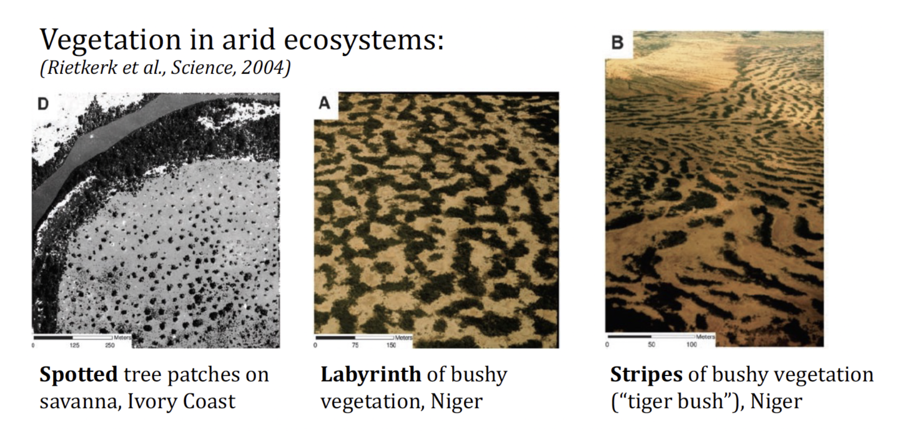
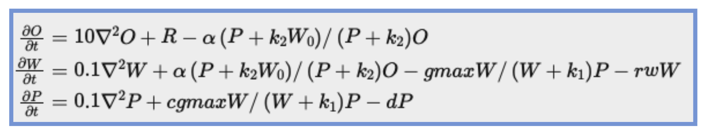
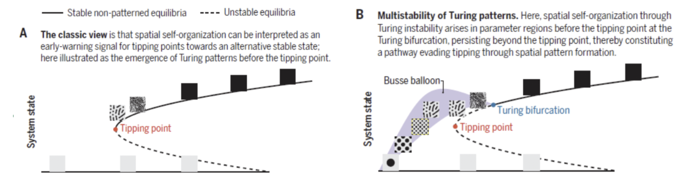

17 Miniproject: Pattern formation in vegetation in semi-arid areas
17.1 Mini description
In semi-arid areas, instead of a spatially continuous vegetation pattern, shrubs and bushes typically occur in a spot, stripe, labyrinthine or inverted spot pattern with the pattern type depending on the availability of water and the severity of grazing by cattle (Figure 1). These vegetation patterns are thought to arise from a positive effect of plant presence on water infiltration in the soil and vice versa from soil water to plant growth, giving rise to a positive feedback loop.

One of the models frequently used for these water-vegetation systems is described by the following set of 3 equations:

\[ \frac{\mathrm{d}N}{\mathrm{d}t} = rN(1 - \frac{N}{K}) \tag{17.1}\]
And Equation A.1 is a reference to the equation above.
The model has three variables, O = surface water, W = soil water and P is plant biomass.
The parameters are R=rainfall, alpha=maximum uptake of surface water to become soil water, W0= the plant biomass independent fraction of surface water uptake, k2 =saturation constant determining how much plant biomass you need to reach half maximum plant mediated surface water uptake, gmax = the maximum uptake of soil water by plants, k1=saturation constant of the soil water level at which this uptake is half maximum, rw = soil water loss due to evaporation, c=factor for the conversion of uptaken water into plant biomass, and d=decay rate of plant biomass.
Classically, it was thought that the positive feedback between water and plants gives rise to a bistable system in which at a certain point, a further gradual decrease in water level or increase in cattle grazing could lead to the sudden collapse of the vegetation, a phenomenon referred to as a catastrophic bifurcation or tipping point. Furthermore, it was thought transitions in spatial patterning could be interpreted as warning signs for the system becoming closer to this point of sudden collapse (Fig 2A). More recent mathematical analysis instead suggests that spatial patterning may allow for a more gradual transition from high to low vegetation levels without the occurrence of sudden transitions (Fig2B).

In this project you will investigate for the given equations which of the two situations apply for this model. Since we are not mathematicians, we will go about this in a predominantly numerical manner. First let us study the type of behavior the bove given model generates. For this you can use the python code ……. Investigate how the type of pattern, but also the average vegetation density changes as a function of rainfall, and whether you think the changes you observe reflect a catastrophic transition or rather a gradual change. Hint: Start with a rainfall level of 0.7 and increment by 0.1. Once you find patterns you can go back and use smaller steps to find the precise transition point. Once you find homogeneous patterns you can do 2 more 0.1 increments and then stop. Note that you will need to write additional code to quantify average levels, pattern characteristics etc. Analyse whether there is a critical transition or not.
Below R=1 no patterns, boundary at R=1.02. At that point P=4.7 so transition in terms of levels is sudden
Now investigate the dependence of vegetation on rainfall in a non-spatial setting where Turing patterns can not occur. If we want to do things like a phase plane analysis, enabling us to study e.g. if our model is bistable, which equilibria are stable, and how this changes when we change parameters (i.e. to understand our sudden transitions in vegetation levels), we often try to reduce our models to 2D. So let us try to simplify the given 3D model to 2D by using a so-called QSSA (quasi steady state assumption) for the surface water. (Hint: To do so write dO/dt=0 and solve this for O, which gives you an algebraic equation. Now you can drop the dO/dt equation and in the other equations, substitute O for this algebraic equation.) Analyse this model using an R package called Grind that is made for analysing ODE models:……..
You can check the outcomes of this analysis by running the spatial python code and put all the slow diffusion parameters to the value of the fast diffusion parameter. Analyse whether you observe a critical transition as function of rainfall or not.
The fold bifurcation occurs at R=1.17 so earlier than in the spatial model. The fold bifurcation occurs at a vegetation level of 2 something so lower than for the spatial model. Also range of R with bistability is quite limited, already soon you get a transcritical bifurcation.
- Now compare how vegetation depends on rainfall between the spatial and non-spatial model and compare this to the situations in Figure 2A and 2B.
In the model we used here, spatial patterns allow vegetation to persist at lower rainfall levels (no vegetation below R=1 instead of R=1.17), however the transition from vegetation to no vegetation is actually more sudden (veg=4.7 instead of 2 something). So we are neither in the situation of Fig2A nor Fig2B but in a third combined situation where transitions in vegetation pattern do warn for collapse (Fig 2A), but also postpone yet not gradualize the collapse (Fig 2B).
In Madagascar people are trying to combat deforestation not by planting small trees, but by digging so-called foxholes, shallow round holes in the ground that are more or less evenly spaced across the terrain where they put in tree seeds in the holes. Due to their somewhat increased depth the foxholes receive more water than their environment, thus locally promoting germination and plant growth. It is said that this approach is more efficient and successful than simply planting trees.
Let us consider a situation where vegetation is absent. Let us now compare two approaches, one in which little trees are planted uniformly, and one in which even tinier trees (i.e. germinating seeds) are placed in potholes where local water conditions are more favorable. Determine in your model, using the same equations as before what vegetation density level is necessary for homogeneous planting as an initial condition to result in a stable vegetated state. Next compare this to planting tiny plants in potholes. You can play with the size of the potholes and their numbers, as well as the precise level of starting vegetation within them and the regulatory of their positioning. To simplify the comparison you may do so for a single rainfall level “R”. Make sure to choose a value for R that allowed for vegetation in the spatial model
When implementing the potholes some programming is required to create circles with certain sizes and pattern them either regularly or irregularly and at different distances
Water conditions are better in the potholes, this can be achieved by localling making the “R” level higher or have preferential diffusion or convection of water towards them
For master students. Increase the value of alpha in the spatial model. Study again how vegetation patterns depend on rainfall level. Asses what happened to model outcomes and provide an explanation.
If alpha is high the infiltration is fast and hence the positive feedback loop is no longer local. As a consequence spatial patterning disappears and the system behaves like the non-spatial one.
18 References
See https://www.science.org/doi/10.1126/science.abj0359